Section 5 ggplot2 and the grammar of graphics
By Raphael Scherrer, data from Anne-Marie Veenstra-Skirl

In this tutorial we will learn how to make nice graphics using ggplot2, perhaps the most well-known member of the tidyverse. So well-known, in fact, that people often know ggplot2 before they get to know about the tidyverse. We will first learn about the philosophy behind ggplot2 and then follow that recipe to build more complex customized plots through some examples.
5.1 Introduction
5.1.1 What is ggplot2 and why use it?
There are many ways of making graphics in base R. For example, plot is used for scatterplots, hist is used for histograms, boxplot is self-explanatory, and image can be used for heatmaps. However, those functions are often developed by different people with different logics in mind, which can make them inconsistent with each other, e.g. one has to learn what the arguments of each function are and switching from one type of visualization to another may not be very easy. ggplot2 is aimed at solving this problem and making plotting flexible, allowing to build virtually any graph using a common standard, the grammar of graphics (which is what “gg” stands for). By building on a single reference grammar, ggplot2 fits nicely into the tidyverse, and as part of it, it also follows the same rule as tidyr, dplyr or purrr, making the integration between all those packages very smooth.
5.1.2 What is the grammar of graphics?
The grammar of graphics is a system of rules on how to structure plots such that almost any graph can be made through combinations of a limited set of simpler elements, just as you can make any sentence by combining together letters from an alphabet. ggplot2 is the implementation of this philosophy in R, and comes with a limited set of layers, that you can pick and combine into an impressive variety of graphics, all based on the same syntax. But what are those elements?
Here is the backbone of a ggplot statement (I will from now on use “ggplot” to refer to an object of class ggplot, the output of the ggplot function and the object that contains our graphic), taken from the book R for Data Science:
ggplot(data = <DATA>) +
<GEOM_FUNCTION>(
mapping = aes(<MAPPINGS>),
stat = <STAT>,
position = <POSITION>
) +
<COORDINATE_FUNCTION> +
<FACET_FUNCTION>This pseudocode snippet illustrates a fundamental aspect of ggplot2, which is that plots are built by successive commands, each corresponding to a layer, assembled together using the + operator. This might seem less practical than having a whole plot made in a single call to the plot function, but it is this modularity that actually gives ggplot2 its flexibility.
This means that in ggplot2 you will typically need multiple commands to make a plot. All ggplots are made of at least the two following basic ingredients:
- A call to the
ggplotfunction, with the relevant data frame passed to it (this data frame contains our data to plot) - A
geomlayer, specifying the type of plot to be shown. Variables from the data are mapped onto the graphical properties of this layer, called aesthetics.
That means that:
will not show anything. A ggplot object is there, but it has no layers yet.
Plots can then be customized with statistical transformations, re-positioning, changes in coordinate system, facetting, and more. We will now go through the different elements.
5.1.3 Quick plot
Note that the qplot function, which stands for “quick plot”, will show a plot when called on your dataset. It is a wrapper around ggplot2 layers that allows to quickly get a visualization, just like using plot from base R. However, it is less flexible than combining your ggplot yourself, so here we will make sure that you understand how the different layers are assembled.
5.2 But first, the data
In this chapter we will use the data from bacterial_experiment.csv, forged by Annie for us to use. This dataset resembles Annie’s experiment where she created mutator strains of bacteria (that is, bacteria that mutate at a much higher rate than usual) and tracked their growth through time and at different concentrations of an agent supposed to activate the full “mutation potential” of those strains.
data <- read_csv("data/bacterial_experiment.csv")
data
#> # A tibble: 310 x 7
#> strain assay conc ratio time cfu OD600
#> <chr> <chr> <dbl> <dbl> <chr> <dbl> <dbl>
#> 1 strain 1 test 1 1 8.58 T0 320000000 0.319
#> 2 strain 1 test 1 1 8.58 T1 1293846908 0.911
#> 3 strain 1 test 1 1 6.11 T0 370110830 0.287
#> 4 strain 1 test 1 1 6.11 T1 1480443320 0.9
#> 5 strain 1 test 1 1 11.8 T0 377928804 0.321
#> 6 strain 1 test 1 1 11.8 T1 1511715216 0.914
#> # … with 304 more rowsThe different strains of bacteria were grown in two different assays, whose details are irrelevant for the purpose of this tutorial. cfu is the number of colony forming units while OD600 is the optical density at 600nm wavelength; both are estimates of bacterial population density. ratio represents the ratio in mutants between two time points, T0 and T1 (encoded in time).
In this table, the unit of observation is the time point (T0 and T1 are on different rows), therefore the values of ratio, which are attributed to each T0-T1 pair, are duplicated to yield one value per time point. To make our life easier with later plotting and to stay within the tidy spirit of the tidyverse (where one table should have one unit of observation), we use the tools we have already learnt to make a ratio-wise table:
data2 <- data %>%
pivot_wider(names_from = "time", values_from = c("cfu", "OD600"))
data2
#> # A tibble: 155 x 8
#> strain assay conc ratio cfu_T0 cfu_T1 OD600_T0 OD600_T1
#> <chr> <chr> <dbl> <dbl> <dbl> <dbl> <dbl> <dbl>
#> 1 strain 1 test 1 1 8.58 320000000 1293846908 0.319 0.911
#> 2 strain 1 test 1 1 6.11 370110830 1480443320 0.287 0.9
#> 3 strain 1 test 1 1 11.8 377928804 1511715216 0.321 0.914
#> 4 strain 1 test 1 1 7.78 369871771 1479487084 0.299 0.92
#> 5 strain 1 test 1 5 10.5 380000000 1505539596 0.295 0.922
#> 6 strain 1 test 1 5 8.29 322488344 1289953376 0.275 0.88
#> # … with 149 more rows5.3 Geom layers
The geom object is the core visual layer of a plot, and it defines the type of plot being made, e.g. geom_point will add points, geom_line will add lines, etc. There are tons of geoms to pick from, depending on the type of figure you want to make, and new geoms are regularly added in extensions to ggplot2 (links at the end of this chapter).
All geoms have aesthetics, or graphical parameters, that may be specified. Those include x and y coordinates, color, transparency, etc. Some aesthetics are mandatory for some geoms, e.g. geom_point needs x and y coordinates of the points to plot. Other aesthetics are optional, e.g. if color is unspecified, all the points will look black. Some geoms even have no mandatory aesthetics, such as geom_abline, which will plot a diagonal running through the origin and with slope one if its intercept and slope are unspecified.
Aesthetics are specified in two ways: (1) variables from the data can be mapped to them using the aes function, or (2) they can take fixed values.
Some of the main aesthetics to know, besides geom-specific coordinates (e.g. x, y), include: color, fill (color used to fill surfaces), group (used e.g. to plot multiple lines with similar aspect on the same plot), alpha (transparency), size, linetype, shape, and label (for showing text).
Note that in most functions across the tidyverse both US and UK English can be used, e.g. colour is also a valid aesthetics, and dplyr::summarize is equivalent to dplyr::summarise.
5.3.1 Mapping variables to aesthetics
Variables are mapped to aesthetics using the aes function. Here is a basic scatterplot example showing ratio against conc:
We can use the other available aesthetics to show more aspects of the data, or to see patterns a bit more clearly. For example, we can color-code the points based on their strain, and change their shape based on the type of assay:
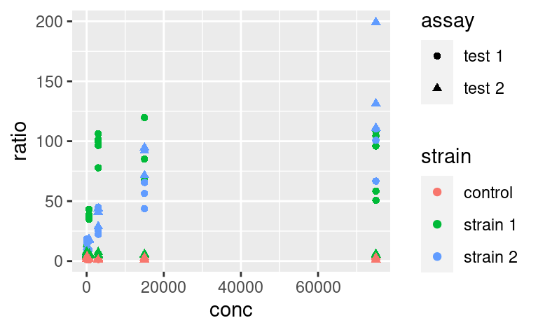
Do you want to map several variables to a single aesthetic? Then interaction from base R can be used within a ggplot:
ggplot(data2) +
geom_point(
mapping = aes(x = conc, y = ratio, color = interaction(strain, assay))
)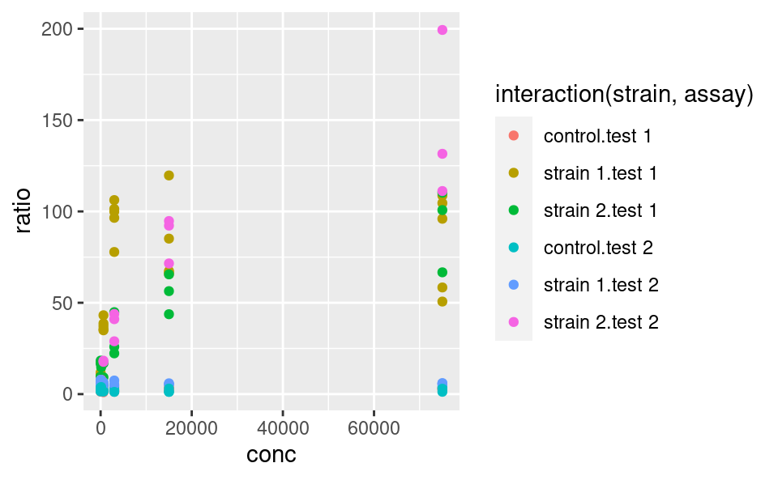
5.3.2 Fixed aesthetics
Fixed graphical parameters (i.e. that are not mapped to a variable) should be added as arguments of the geom outside the aes command. For example, to make all points a little bigger and more transparent, we can use
ggplot(data2) +
geom_point(
mapping = aes(x = conc, y = ratio, color = strain, shape = assay),
size = 2, alpha = 0.6
)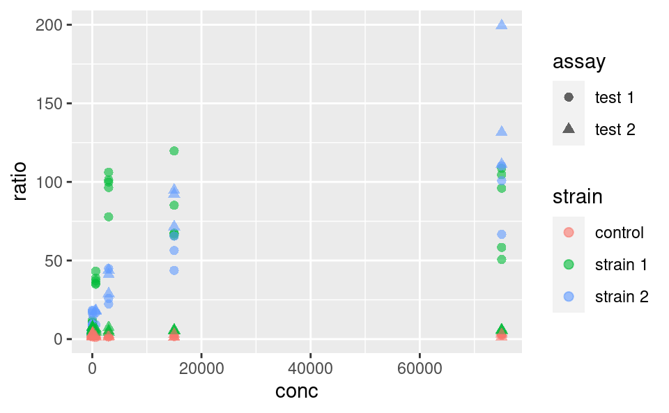
5.3.3 Statistical transformation
Statistical transformations, or stat functions, can be applied to the data within a geom call. Actually, statistical transformations are always applied within a geom call, but most of the time the identity function is used. To illustrate, consider the following plot showing a distribution of ratio for different strains:
Here, the density axis is not part of the original dataset data2; it was computed from the data, for each value of ratio, by using a density-estimation algorithm. This shows that stat_density (and not stat_identity) is the default stat used in geom_density. Every geom comes with its default stat.
Similarly, stat functions can be used in place of geom because every stat has a default geom associated to it. So, we can call:
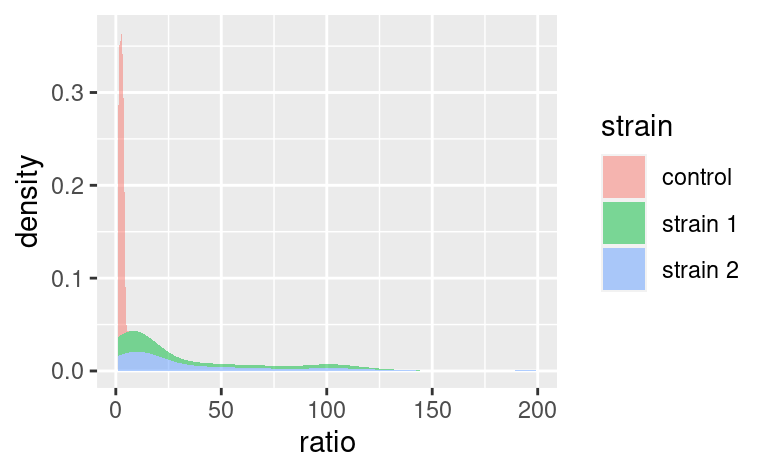
which has geom_density as default geom.
It is possible to override the default stat using the stat argument of geom, and conversely, it is possible to change the default geom associated with a given stat. For example, say we want to plot our densities as points. Then,
does the job (note that we replaced fill with color because our points do not have a surface to fill).
Note that default geom-stat combinations are usually well thought of (density plots are a good example). Therefore, it is often not necessary to play with stats. It may matter in some specific cases, e.g. when using geom_bar, but we do not cover that here (you can check out the dedicated chapter in R for Data Science for an example).
5.3.4 Position
The position argument of geoms allows to adjust the positioning of the geom’s elements. It has a few variants, but the possibilities depend on the geom used. We illustrate those available to geom_bar. By default, geom_bar uses the stat_count statistical transformation, meaning that it will show us the number of observations into each category of a factor, e.g. strain, splitted into categories of another factor, e.g. assay:
If we wanted to visualize proportions instead of numbers, we could use the fill value of the position argument:
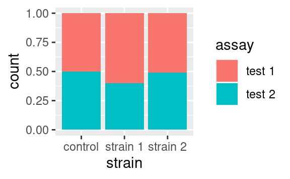
Alternatively we could use the dodge option to show the different categories side-by-side:
Those are only two examples of what can be done. Just remember that position exists and look into the documentation of your geom of interest to see what position adjustments are available! (Check out geom_jitter as a nice wrapper around geom_point with a jitter position adjustment, perfect to overlay with boxplots or violin plots.)
5.3.5 Other geoms
The most common geoms you may encounter are:
geom_pointfor scatter plots andgeom_jitterfor the dodged equivalentgeom_barfor a barplotgeom_textfor a scatter plot of labelsgeom_histogramandgeom_density, self-explanatorygeom_boxplotandgeom_violingeom_line,geom_path(alinenever goes backwards along the x-axis, while apathcan) andgeom_smooth(local regression smoothing)geom_segment,geom_hline,geom_vlineandgeom_ablinethat may come handy as annotationsgeom_tilefor heatmaps
There are litterally tons of geoms and ways to use them. In this tutorial, we emphasize the understanding of the grammar and how to assemble the different ingredients, rather than the ingredients themselves. For this reason, here we are not giving an exhaustive sample of each geom and what they look like. So, keep this list of names in mind as a reminder that whatever plot you want to make, there probably is a geom for it. To explore a gallery of examples, check out the R graph gallery.
5.3.6 Extra on aesthetics
It is possible to use the + operators, not only to add layers but also to modify previous layers. You might wonder why not to write the layer correctly in the first place. This starts making more sense in cases e.g. where a plot can be modified in different ways. For example, consider this plot:

We may want to color-code the points based on strain or assay, or both, thus requiring two plots building on this single one. An important property of ggplot objects is that they can be assigned to variables, e.g.
Note that we have to call the object p for the plot to be displayed. If we just assign the plot to p, the plot does not show. We can subsequently add differential aesthetics to different copies of p:
5.3.7 Plot-wide aesthetics and multiple geoms
In the last example, by adding new aesthetics mapping to the ggplot using the + operator, we did not add these aesthetics specifically to the geom_point layer, but to all the geoms present in the plot. Similarly, one can pass aesthetic mappings to the ggplot command directly, not necessarily with the geom statement. This saves some typing when geoms taking the same aesthetics are used, e.g. geom_violin and geom_jitter:
ggplot(data2, aes(x = factor(conc), y = ratio)) +
geom_violin() +
geom_jitter(width = 0.1)
# x is made categorical hereThis shows a nice example of multiple geoms combined in a single plot. If, however, the aesthetics used in some geoms are geom-specific, better pass them to their respective geom. For example, if you want to color only the points but not the violins, use:
5.3.8 Multiple geoms with different datasets
Just as aesthetics can vary from geom to geom, so do datasets. In other words, the dataset does not have to be passed to the ggplot command necessarily, and can be passed to a geom instead, for example:

This means that different geoms can be based on different datasets. This allows quite some complexification of the plots and illustrates very well the usefulness of the other packages of the tidyverse. Say, for example, that we want to add to this plot a line going through the means at each value of conc. These mean values are not yet present in our dataset, and we need to come up with a mean-wise dataset. dplyr is our friend for this task:
data3 <- data2 %>%
group_by(conc, strain) %>%
summarize(ratio = mean(ratio))
data3
#> # A tibble: 24 x 3
#> # Groups: conc [8]
#> conc strain ratio
#> <dbl> <chr> <dbl>
#> 1 1 control 2.21
#> 2 1 strain 1 7.09
#> 3 1 strain 2 9.16
#> 4 5 control 2.50
#> 5 5 strain 1 7.17
#> 6 5 strain 2 6.89
#> # … with 18 more rowsLet us now add an extra layer of information based on this latest, summary dataset:
ggplot() +
geom_point(data = data2, mapping = aes(x = conc, y = ratio, color = strain)) +
geom_line(data = data3, mapping = aes(x = conc, y = ratio, color = strain))
Here, we could save some typing by writing:
ggplot(data2, mapping = aes(x = conc, y = ratio, color = strain)) +
geom_point() +
geom_line(data = data3)where geom_line inherits the same aesthetic mapping as geom_point. But then, you have to make sure that data3 contains all the aesthetics that the ggplot call expects to see in each of its geoms (here x, y and color).
5.4 Coordinate-system
The default way that the plotting window is organized is an orthogonal space with a horizontal x-axis and a vertical y-axis. Use the coord commands to deviate from this. For example, coord_flip will flip the axes:

while coord_fixed will fix the aspect ratio between the axes, thus showing them on the same scale. For example, the following plot of the optical density between two time points,

becomes:
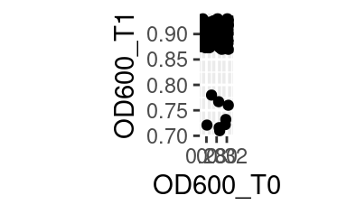
when both axes are shown on the same scale.
Other coordinate systems exist, depending on the need, including coord_polar for radial plots or coord_quickmap, tailored at latitude-longitude plotting.
5.5 Facetting
One of the most powerful features of ggplot2 is its easy way of splitting a plot into multiple subplots, or facets.
There are two functions for facetting: facet_grid and facet_wrap. facet_grid will arrange the plot in rows and columns depending on variables that the user defines:

Here the tilde (~) symbolizes a formula, a type of expression in R with a left and right-hand side, which here are interpreted as variables to use for rows and columns, respectively. If using only one variable for facetting, use . or nothing on the other side of the tilde.
Note that facets are plotted on the same scale. We can use the scales argument to allow free scales, for example:
ggplot(data2, aes(x = conc, y = ratio, color = strain)) +
geom_point() +
facet_grid(strain ~ assay, scales = "free_y")
facet_wrap is similar to facet_grid, except that it does not organize the facets in rows and columns but rather as an array of facets that fill the screen by row, like when filling a matrix with numbers:
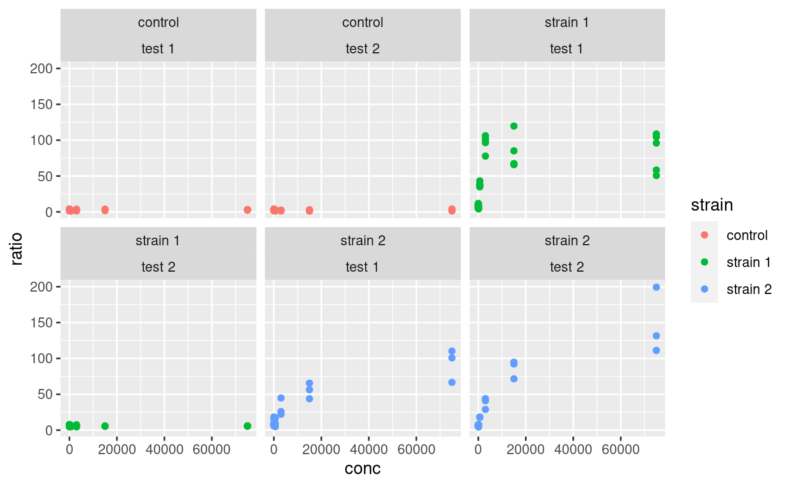
where the position of the variables relative to the ~ becomes irrelevant.
Note that a facetted ggplot is still one ggplot, not a combination of ggplots, which we will cover later.
Custom-labelling the strips of the facets is done with the labeller argument. The way this is used is a little complicated, but essentially looks like this:
ggplot(data2, aes(x = conc, y = ratio, color = strain)) +
geom_point() +
facet_grid(strain ~ assay, labeller = labeller(.rows = label_both))Here, the label_both function is applied to the variable facetting by row, which is strain. label_both tells the labeller to label the strips with the name of the variable (strain) followed by its value, separated by a colon. We will not cover labelling in details here, but keep in mind that the labeller argument is what to play with, and that it takes the output of the labeller function as input, which itself takes labelling functions, such as label_both, as arguments. Other labelling functions include label_value, which just shows the value in the strip (that is the default) and label_parsed, which is used for showing mathematical expressions in strip labels (e.g. greek letters, exponents etc.). It is possible to provide custom names too. For more information on customizing facet strip lables, visit this link.
Note: I made a package called ggsim, yet another extension of ggplot2 with a few functions coming handy for simulation data. One of the functions, facettize, is aimed at making your life easier when labelling the strips of your facets (i.e. not going into the nitty gritty of the labeller function), especially when some facets include parsing mathematical expressions. Feel free to install it from GitHub by using:
5.6 The right format for the dataset
One question that may come to your mind is: what is the right format of a dataset for use in ggplot, especially since it is part of the tidyverse? The answer is: it depends, and this is where the intergration with other tidyverse tools makes our life easier. If, for example, we want to use a variable for facetting or as an aesthetics, it is important to have this variable as a single column. For example, in the original data dataset, we could have compared the optical density between the two time point:
where time is both an aesthetic (x) and its own column. However, if we want to plot the optical density of time point T1 versus that of time point T0, then we need these two time points in separate columns, which is exactly what OD600_T0 and OD600_T1, in the data2 dataset, are (remember we got those using tidyr::pivot_wider):
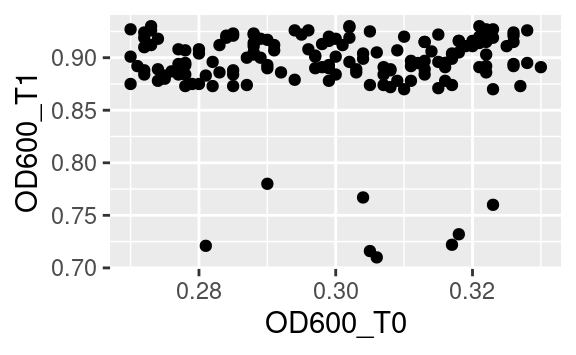
5.7 Plotting as part of a pipeline
What we just saw means that sometimes reformatting of a dataset is needed (e.g. using pivot_longer or pivot_wider from tidyr) to get this one plot done that requires reshaping. If you do not want to spend space storing a reformatted data frame into a whole new object, just to make a single plot, you can use ggplot as final part of a tidyverse pipeline. For example, starting from the original data:
data %>%
pivot_wider(names_from = "time", values_from = c("cfu", "OD600")) %>%
ggplot(aes(x = OD600_T0, y = OD600_T1)) +
geom_point()
Notice the use of the pipe %>% to pass the resulting data frame on to the ggplot command. Because ggplot is called with a pipe, its first argument is already passed (it is the data frame coming through the pipe), so we only need to pass the second argument, i.e. the aesthetics mapping, to the ggplot function.
5.8 Customization
Now that we saw everything there is to know about structuring a ggplot, it is time to learn how to polish it (the easiest and most rewarding part!).
5.8.1 Scales
Every aesthetics can be scaled. This includes specifying what values an aesthetics can take (e.g. what colors to pick, or what range of transparencies to use), possible break points along the legend, or legend titles and labels, among others. Use the scale_* family of functions for that. There are many such functions, because many aesthetics can be modified, but the logic behind their naming is always the same:
scale_<AESTHETIC>_<TYPE>where <AESTHETIC> is replaced by the aesthetic you want to scale (e.g. color, size, alpha) and <TYPE> is the type of variable that is mapped to this aesthetic (common types are continuous, discrete and manual). Some scaling functions do not take a <TYPE> but just an <AESTHETIC> in their name, e.g. scale_alpha.
In our example, if we color-code points according to their strain, which is a categorical variable, we can use scale_color_manual (aka scale_colour_manual) to manually pick the colors we want:
ggplot(data2, aes(x = conc, y = ratio, color = strain)) +
geom_point() +
geom_smooth() + # just to spice up our use of geoms
facet_grid(strain ~ assay) +
scale_color_manual(values = c("forestgreen", "goldenrod", "mediumseagreen"))Alternatively, we could color-code the points based on their number of CFU at time point T1, cfu_T1, which is a continuous variable, using scale_color_continuous. Without scaling:
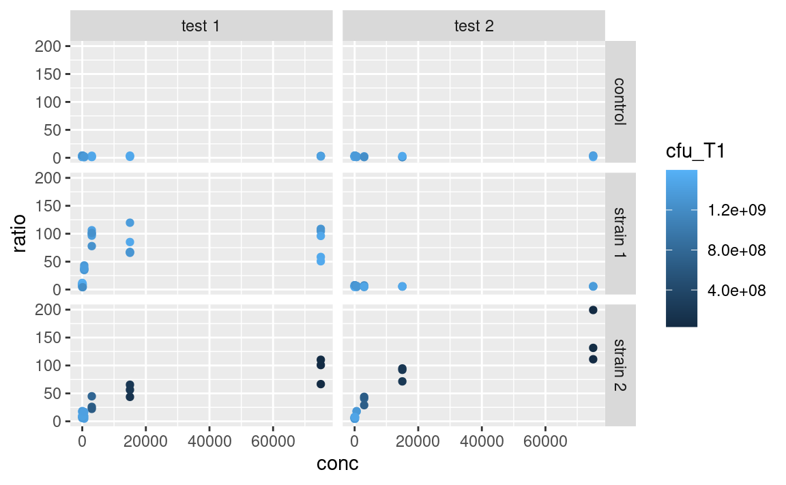
With scaling:
ggplot(data2, aes(x = conc, y = ratio, color = cfu_T1)) +
geom_point() +
facet_grid(strain ~ assay) +
scale_color_continuous(type = "viridis")The arguments that are taken by the scale_ function really depend on the use case, e.g. scale_color_manual expects discrete values, scale_color_continuous expects a type of built-in continuous color gradient, and scale_color_gradient expects a low and high color boundaries (and also a mid-gradient color in the case of scale_color_gradient2). But the logic shown here is similar across many aesthetics, e.g. scale_alpha_continuous and scale_size_continuous work in similar ways, both taking a range argument. So, lots of scaling functions to play with, of which we do not provide an exhaustive list here.
Mandatory aesthetics, such as x and y, also have their scaling functions. If x or y is continuous, one can e.g. use scale_x_log10 to show this axis on a logarithmic scale, without having to log-tansform the data before plotting, e.g.
ggplot(data2, aes(x = conc, y = ratio, color = cfu_T1)) +
geom_point() +
facet_grid(strain ~ assay) +
scale_color_continuous(type = "viridis") +
scale_x_log10()More on re-scaling legend titles and labels further down.
5.8.2 Labels
The functions ggtitle, xlab, ylab and labs allow you to customize the labels shown for each aesthetics (remember that the x- and y-axes are aesthetics too), and for the main title of the plot. On to a full-fledge example:
p <- ggplot(data2, aes(x = conc, y = ratio, color = cfu_T1)) +
geom_point() +
facet_grid(strain ~ assay) +
scale_color_continuous(type = "viridis") +
scale_x_log10() +
xlab("Nisin concentration (mmol/mL)") +
ylab("Mutational ratio") +
labs(color = parse(text = "'CFU at '~T[1]")) + # plotmath expression
ggtitle(
"A very important experiment",
"So important it deserves a subtitle"
)
p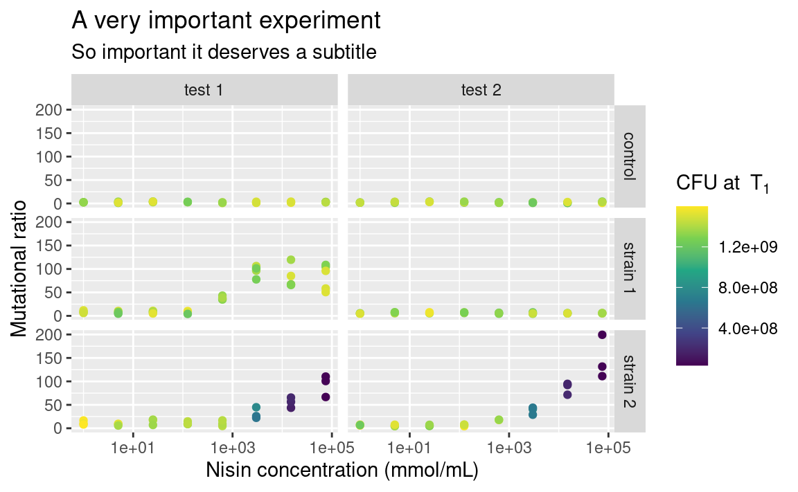
Note that xlab and ylab are wrappers around labs, meaning that we could have provided labs with x = ... and y = ... in addition to color = ..., its arguments just need to take the names of the aesthetics. If you want no labels, use e.g. xlab(NULL) or ylab(NULL).
Also notice the use of parse to display mathemetical notations using the plotmath syntax. This is not part of the tidyverse though, so it is a story for another day, feel free to look it up (type ?bquote)!
5.8.3 Themes
You may be already frustrated that all plots have this same grey default ggplot2 background. Of course, it is possible to change this too by playing with the theme functions. There are other built-in themes than the default grey one, such as theme_bw or theme_classic:
The individual elements of the theme, e.g. the background grid or the color of the panel, can be customized using the arguments in the theme function. The theme function can also be used to modify stuff related to the legend or the axes of the plots. For example:
p <- p +
theme_bw() +
theme(
legend.position = "left",
axis.text.x = element_text(angle = 60, hjust = 1)
)
p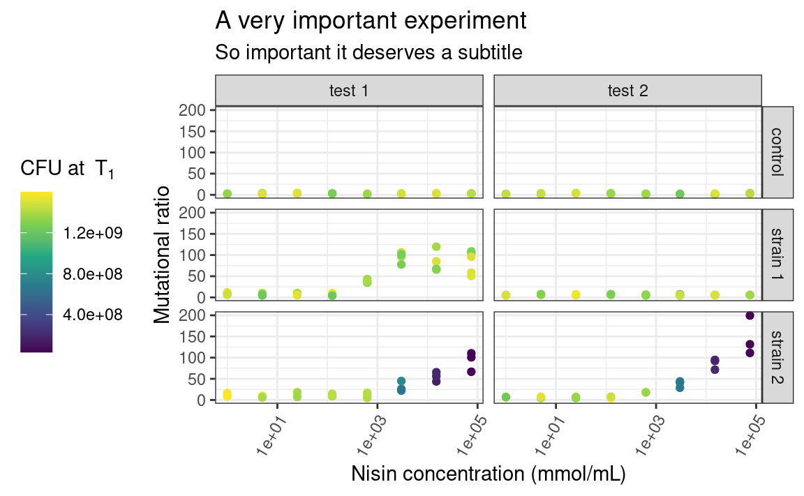
Here, legend.position is sort of self-explanatory, but axis.text.x is a bit more subtle. Some elements of the theme, such as the text of the axes, need a series of graphical parameters in order to be modified, and the graphical parameters that can be used depend on the type of object those theme elements are (are they text, rect or line?). We use the element_* family of functions to pass those graphical parameters to our theme elements of interest. Here, we use element_text to transform the text on the x-axis by rotating it by an angle of 60 degrees, and then align each label to the right (hjust stands for “horizontal justification”). Again, lots of combinations are possible. Explore!
5.8.4 Legend
The one thing I Google the most, without a doubt, is “custom legend in ggplot”, because I always forget how to choose which legend to show, e.g. if I want to display the color legend but not the alpha legend. So here it is: to hide all the legends, use:
And to selectively hide some legends, use guides:

It is also important to remember that ggplot2 will try to combine legends together whenever it can. If the same variable is mapped to two different aesthetics, e.g. shape and color, only one legend will appear:
ggplot(data2, aes(x = conc, y = ratio, color = strain, shape = strain)) +
geom_point() +
facet_grid(strain ~ assay) +
scale_x_log10()But this behavior can be controlled. You can use the arguments of the scale_ functions to pass custom titles and labels to the legends. And if the legends mapping to the same variable have different titles or labels, they will be shown separately:
ggplot(data2, aes(x = conc, y = ratio, color = strain, shape = strain)) +
geom_point() +
facet_grid(strain ~ assay) +
scale_x_log10() +
scale_color_manual(
"color legend", values = c("forestgreen", "goldenrod", "mediumseagreen")
) +
scale_shape_manual(
"shape legend", values = c(16, 17, 18),
labels = c("Control", "Strain 1", "Strain 2")
)Note that you can also use this trick to combine different legends together, by giving them the same titles and labels.
5.9 Combining plots
This was more or less what you need to know to be operational when plotting single ggplots. But what if the facetting option is not enough, and you want to combine multiple plots into a single figure? ggplot2 itself does not do that, but the good news is, there are many packages that do. Those include patchwork, cowplot, grid, gridExtra, egg or aplot (and probably more).
One term that these packages often use is grob. A grob is a ggplot-like object, such as a ggplot but could also be a single text label in the middle of a plotting window. These packages essentially assemble grobs together.
patchwork is personally my favorite so I will focus on this one here. It has the advantage to automatically align the frames of the different plots across the different subplots (I found that this is not entirely true when combining ggtree objects with other plots, aplot is better for this specific case). It also has an excellent, succinct documentation.
Let us look at an example, where we assign the previous plot to p1 and make a new plot to combine it with, called p2:
p1 <- p
p2 <- ggplot(data2, aes(x = strain, y = OD600_T1, color = strain)) +
geom_violin(draw_quantiles = 0.5) +
geom_jitter(width = 0.2) +
theme_classic() +
xlab(NULL) +
ylab(parse(text = "'Optial density at 600nm at'~T[1]")) +
theme(legend.position = "none")
p2In patchwork, we would combine both using:

patchwork uses operators such as +, / or | to assemble the plots in various layouts. It looks simple, but a caveat of this approach is that it may become tedious when assembling, e.g. 15 small plots, or plots from a list of unknown length. The programmatic equivalent of the above example is:
More customization can be added to the previous combination of plots, such as layout specifications, e.g. controlling the position and dimension of the different plots, or annotations, e.g. global title, labelling each plot or capturing the legends of all the plots and show it as one global legend). But this is a ggplot2 tutorial and we just want you to know that patchwork and friends exist, so go check them out to know more about what they can do!
5.10 Saving a plot
Last but not least, ggplots have their own saving function: ggsave (it also works on combinations of ggplots made by patchwork or cowplot), which guesses the extension of your figure (e.g. .png or .pdf) from the file name you provide. You can also give it specific width, height and dpi (resolution) parameter values.
5.11 High throughput plotting workflow
As we mentioned in the part about combining plots, sometimes we want to do things many times (in my case I often make 100 times the same figure, just for different replicate simulations). Of course we would not copy and paste many times the same snippet of code, or write 100 times + to assemble some plots (by now we are advanced R users, after all). This is where we can make use, again, of the combination of tidyverse tools, and especially purrr.
Let us make a function that plots the number of CFU against the optical density, facetted by time point (so, that function expects a time point-wise dataset, such as data):
plot_this <- function(data) {
ggplot(data, aes(x = OD600, y = cfu, color = cfu)) +
geom_point() +
facet_grid(. ~ time) +
theme_classic() +
scale_color_continuous(type = "viridis") +
theme(legend.position = "none") +
xlab(parse(text = "'OD at 600nm at'~T[1]")) +
ylab("CFU")
}Note that this does not plot anything, it is just a function that will if called on a dataset.
The objective is to apply this function to each strain-assay combination, thus getting one plot per combination. We can check that this function works as expected for a single combination using our friend dplyr:
which works because plot_this takes a data frame as first argument.
Now that we are happy with out single-plot function, we tidyr::nest our data frame into all the relevant combinations of strain and assay, and we purrr::map through the resulting list-column to produce many ggplots in one go:
newdata <- data %>%
group_by(assay, strain) %>%
nest() %>%
mutate(fig = map(data, plot_this))
newdata
#> # A tibble: 6 x 4
#> # Groups: strain, assay [6]
#> strain assay data fig
#> <chr> <chr> <list> <list>
#> 1 strain 1 test 1 <tibble [72 × 5]> <gg>
#> 2 control test 1 <tibble [48 × 5]> <gg>
#> 3 strain 2 test 1 <tibble [48 × 5]> <gg>
#> 4 strain 2 test 2 <tibble [46 × 5]> <gg>
#> 5 strain 1 test 2 <tibble [48 × 5]> <gg>
#> 6 control test 2 <tibble [48 × 5]> <gg>where the new list-column fig is a list of ggplot objects, that we can check individually:
Looks purrrfect.
If you ask yourself why going through this hassle whith only two assays and three strains, just think about a case where you would have hundreds of e.g. simulations, sequences, field sites or study species.
Let us go a bit further. Now we want to combine plots for each strain into one figure per assay. We also want to give the resulting combined plot a figure file name, and save all the figures. There we go:
newdata <- newdata %>%
select(-data) %>% # just to clean up a bit
group_by(assay) %>%
nest() %>%
mutate(combifig = map(data, ~ wrap_plots(.x$fig)))
newdata
#> # A tibble: 2 x 3
#> # Groups: assay [2]
#> assay data combifig
#> <chr> <list> <list>
#> 1 test 1 <tibble [3 × 2]> <patchwrk>
#> 2 test 2 <tibble [3 × 2]> <patchwrk>Note that we use the formula-way of passing functions to map (using ~), which is more succinct than the lambda way (using an anonymous function function(x) wrap_plots(x)), and where .x is interpreted as an element of the list we iterate through (here the list-column data). Please refer to the purrr documentation for more details.
As we can see, we have created a new list-column combifig, filled with patchwork objects, i.e. combined plots:
We could of course further customize the assembly of plots, but we refer the reader to the patchwork documentation for this.
Last step, preparing file names and saving the figures, using old friends from the tidyverse:
library(glue)
newdata %>%
mutate(figname = glue("data/figure_{str_replace(assay, ' ', '_')}.png")) %>%
mutate(saved = walk2(figname, combifig, ggsave))
#> # A tibble: 2 x 5
#> # Groups: assay [2]
#> assay data combifig figname saved
#> <chr> <list> <list> <glue> <glue>
#> 1 test 1 <tibble [3 × 2]> <patchwrk> data/figure_test_1.p… data/figure_test_1.p…
#> 2 test 2 <tibble [3 × 2]> <patchwrk> data/figure_test_2.p… data/figure_test_2.p…5.12 Want more?
ggplot2 is undoubtedly one of the largest chunks of the tidyverse. Here we tried to provide a global understanding of how it works, but we could not dig into all possible functions it has (this would take us days). Hopefully now you are armed with the necessary knowledge to be able to find the missing pieces you need.
Some things, however, are missing from ggplot2. Fortunately, there are many of extensions building on ggplot2 that respect the same grammar. Some of them implement new geoms (e.g. such as ggridges for ridge-density plots, ggradar for radial plots, or gghalves for mixes of geoms), others combine plots together (examples cited above), offer more complex themes (e.g. ggnewscale for multiple scales of the same type to coexist, or ggdark for a dark background), deal with complicated objects that are not trivial to fit in data frames (e.g. ggtree for tree-like objects or ggraph for networks), or provide shortcuts to quickly produce publication-ready figures for common plot layouts and their corresponding statistical analyses (e.g. ggpubr, ggrapid or GGally). There are even packages for animated graphics (gganimate), interactive plot building (esquisse) or 3D surface plotting (rayshader). See the links below!
5.13 References
- The
ggplot2website where you can find links to other resources - The
ggplot2cheatsheet - The dedicated chapter in R for Data Science
- A non-exhaustive list of extensions at this link
- The R graph gallery for inspiration
- Hadley’s article explaining the grammar of graphics
- The
patchworkdocumentation - The
ggtreeandggraphpackages